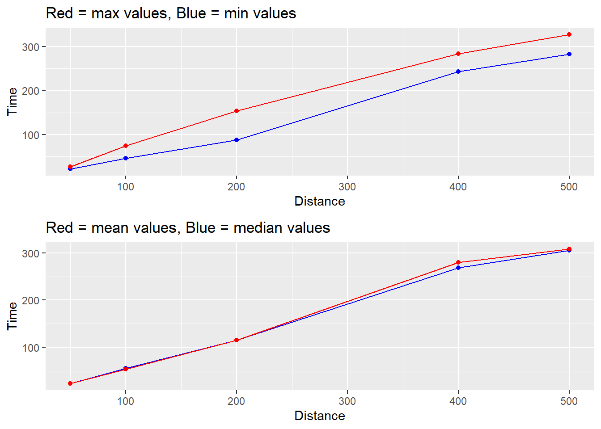
Statistical transformations
Overview
This module describes some differences in data summaries and operations of functions in {dplyr}. Any form of data aggregation (e.g., data summary) will influence the contents of a data frame and consequently, how data are communicated visually. Depending on the data information you wish to communicate in your visualization, you may need to use different data frames or you may need to summarize a single data frame in a different ways either using {dplyr} functions like group_by() and summarize() or **{ggplot2}* functions like stat_summary(). For example, you may wish to communicate the min() and max() of some numeric variable in a single line-plot visualization in order to convey changes in both metrics. Alternatively, you may wish to display both mean() and median() values across time in the same visualization as seen below. You may also need to create multiple data frames if a single data frame contains either too much or too little information. We will also discuss differences in grouping structure for dplyr::mutate() and dplyr::summarize() that will affect both variable computation and plot creation.
To Do
Review corresponding Canvas video(s).
Optional Readings
External Functions
Provided in class:
view_html(): for viewing data frames in html format, from /src/my_functions.R
You can use this in your own work space but I am having a challenge rendering this of the website, so I’ll default to print() on occasion.
R.utils::sourceDirectory(here::here("src", "functions"))Libraries
- {dplyr} 1.1.4: for selecting, filtering, and mutating
- {ggplot2} 3.5.1: for plotting
Load libraries
library(dplyr)
library(ggplot2)Loading Data
To examine some associations, we will use some swimming event times which can be accessed from:
https://raw.githubusercontent.com/slicesofdata/dataviz24/main/data/processed/cleaned-2023-cms-invite.csvTo access the data, either read the file directly from the url using read.csv() and assign the data frame a name like SWIM:
read.csv("https://raw.githubusercontent.com/slicesofdata/dataviz24/main/data/processed/cleaned-2023-cms-invite.csv")
Or download it and save to the /data/processed directory and read from there.
SWIM <- read.csv(here::here("data", "processed", "cleaned-2023-cms-invite.csv"))Flavors of Data
Data come in many flavors. Data are collected on virtually everything you could think of. If there is a record of something, there is data. The stars, weather, television viewing, social media use, ocean currents, brand preference, parenting, symphonies, learning to code, graphical perceptual. When there is no record of something, you could collect data on it. For example, you could start logging the quantity of quality of advice your grandparents offer you. You may likely discover that advice changes based on their age. You may also consider logging the number to times you see your grandparents or your parents/guardians annually in order to determine approximately how many more times you will see them before they die, if they haven’t yet. In fact, some folks have already worked on this problem using actuarial tables. Seeyourfolks will provide a model estimate for you. See for yourself. Sure, it may be in error but all models have error. Nevertheless, prediction may change your life.
Data Organization and Variability
In some industries, data may be organized at a high level. For example, someone examining population growth may have data at a census level or an annual level. Someone who studies education may had data organized at a state level or county level. In other industries, data may be organized at a fine-grained level. For example, someone studying health outcomes may have data about individuals daily if daily health checks are part of a data-collection protocol. Someone who studies education may design a study to collect data, or obtain data, on daily-performance of students. Even further, their data may contain repeated measurements of specific topics (e.g., 10 different addition problems rather than one). Similarly, someone studying some aspect of human cognition may have high-level data like overall accuracy and total time needed to complete the task or they might have data at a low level containing trial-level accuracy and reaction timed data for each item.
Depending the organization of data and its level of granularity, one may be limited to a set of statistical models to examine. Because variability in data plays a significant role in testing models, the absence of variability will prevent modeling using statistical techniques that require that variability. For example, if your data set contains only one value for a country, you are likely limited to models that allow for comparisons or associations across countries or across time. For example, you could examine data to understand how population growth for a single country changes over time or you could examine population growth in one country compares to one or more than one country. Using the educational example, one could examine changes in a state over time or one could examine states to one another. By contrast, if you have daily data per student for a variety of topics, you have variability in data to examine at a variety of levels. You could examine how an individual’s performance changes across time in general or specifically for a specific topic. You can also examine how the individual performs on one type of task relative to another. You could also examine changes over time in performance on one task compared with changes over time for other tasks. Stepping up the hierarchy, you could compare performance of individuals across teachers, teacher’s sections, schools, school districts, counties, states, etc. because there is variability in the data to try to understand.
Although the data structure is typically conceived from top to bottom, which lower levels nested under higher levels, I will present the opposite order to prevent you reading from the bottom up.
Daily Performance
- on an item type (e.g., 4 + 17)
-- on a task (e.g., addition)
--- for a person (e.g, Bill)
---- in a teacher's class (e.g., Mrs. Collins, Section 1)
----- in a school (e.g., Robert D. Wilson)
------ in a district (e.g., Western Wayne)
------- in a country (e.g., Wayne)
-------- in a state (e.g., Pennsylvania)
--------- in a country (e.g., United States of America)The structure at all these levels means that you can perform more complex models like linear-mixed models/hierarchical linear modeling. The variability in the data at all these levels allows you to account for the variability in ways you cannot if you only have top-level data. When you have the variability, you can examine for effect like random effects or fixed effects, which are not applicable to simpler linear models. To the extent that teachers in District A teach differently or motivate students differently from those teachers in District B, you could examine the data for these differences and account for them statistically (hold them constant as if teachers were the same) at higher levels of the data. In fact, that repeated-measures ANOVA model you are taught in your statistics class is not be appropriate for data with repeated measurements under different conditions because two individuals who with the same average performance may differ in their variability. For example, two students answer the subtraction problem (14 - 7) on average in 10.0 seconds across 5 instances. Mildred is consistent and answers it between 8 and 12 seconds. Tilford, however, answers with a range of 5 to 20 seconds. Although performance time is equated, the variability represents something very different in ability.
Aggregating Data
Data aggregation refers to how data are organized or compiled. When you have multiple levels of data as presented in the example above, data aggregation refers to the process of taking the raw data and gathering it in some way to summarize for statistical analysis or data visualization. For example, you could summarize data by individual, class, school, district, county, and state. Alternatively, you could summarize data by district, county, and state and ignore individuals, class, and school. The two types of data aggregation will result in different numbers of cases (rows) in a data frame most obviously but also in the actual numbers.
The variability in individuals as well as in subgroups can be useful to answering your data question. Models like linear mixed models are beyond the scope of this course, however. Whether you look into those types of model or you don’t, you should realize that you are making a big assumption in your data when you aggregate at any level. That assumption is that the variability in the data that are aggregated is the same across all cases in the data. Specifically, by aggregating Tilford’s and Mildred’s individual data in order to obtain their average performance, you have lost the variability at the individual level and essentially arbitrarily set that variability to 0. At higher level, aggregating the data by School also means that you lose this information and make the assumption that there is no variability among individuals in each school (e.g., all individuals have the same value). Such assumptions are particularly relevant to repeated-measures models (e.g., repeated-measures ANOVA does not use this information) and are potentially not assumptions you want to make about your data.
In the end, how you interpret a model or a data visualization will be dependent on that aggregation of the data, modeled or displayed. The take home message about aggregating data, then, is that you trade off a loss of information for some summary. Only you can weigh the costs and benefits of this trade off. That said, sometimes you have no choice because your client, your employer, or your data resource has only data an an aggregate level. In those situations, you cannot do much except acknowledge the information loss in the ability of the model to predict an outcome. If, however, that aggregated level can still be summarized or aggregated in some way, you are back to reflecting on issues of aggregation.
Statistical Summaries
Whenever you create visualizations using {ggplot2}, there is some statistical transformation performed on the data. The data that are plotting represent that transformation. In some cases, the transformations are simple and in other cases they are complex. Let’s review some simple examples.
Identity and Count Transformations
Looking at the geom_point() function, we see that stat = "identity" by default. When "identity" is set to stat, this will call the stat_identity() function for performing the transformation. Identity transformations are essentially a WYSIWYG (what you see is what you get) transformation, so this is not what you typically think of as a transformation.
geom_point(
mapping = NULL,
data = NULL,
stat = "identity",
position = "identity",
...,
na.rm = FALSE,
show.legend = NA,
inherit.aes = TRUE
)Using data, we see an example of geom_point() with this default operation.
SWIM |>
ggplot(mapping = aes(x = Split50, y = Time)) +
geom_point(stat = "identity")Warning: Removed 15 rows containing missing values or values outside the scale range
(`geom_point()`).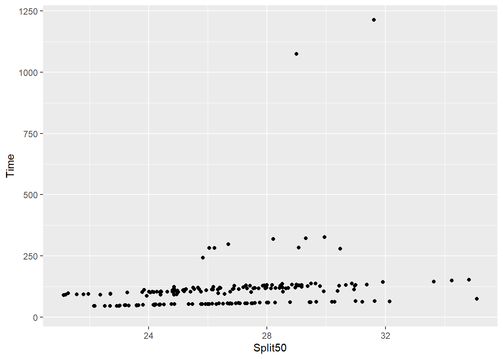
Other functions perform other statistical transformations on the data. For example, by default, geom_bar() will count the instances of a variable because the statistical transformation is stat = "count".
geom_bar(
mapping = NULL,
data = NULL,
stat = "count",
position = "stack",
...,
just = 0.5,
width = NULL,
na.rm = FALSE,
orientation = NA,
show.legend = NA,
inherit.aes = TRUE
)And example with geom_bar() shows this but of course, we need to specify only an x or a y aesthetic for geom_bar(). In order to count something, we can use a variable that is not as distributed as those just used.
SWIM |>
ggplot(mapping = aes(x = Event)) +
geom_bar(stat = "count")
But how is geom_bar() doing this transformation? Well, when stat = "count", the stat_count() function is called with a default geom of geom = "bar", thus plotting the counts with bars.
stat_count(
mapping = NULL,
data = NULL,
geom = "bar",
position = "stack",
...,
width = NULL,
na.rm = FALSE,
orientation = NA,
show.legend = NA,
inherit.aes = TRUE
)Using stat_count() specifically, we can create the same plot.
SWIM |>
ggplot(mapping = aes(x = Event)) +
stat_count(geom = "bar")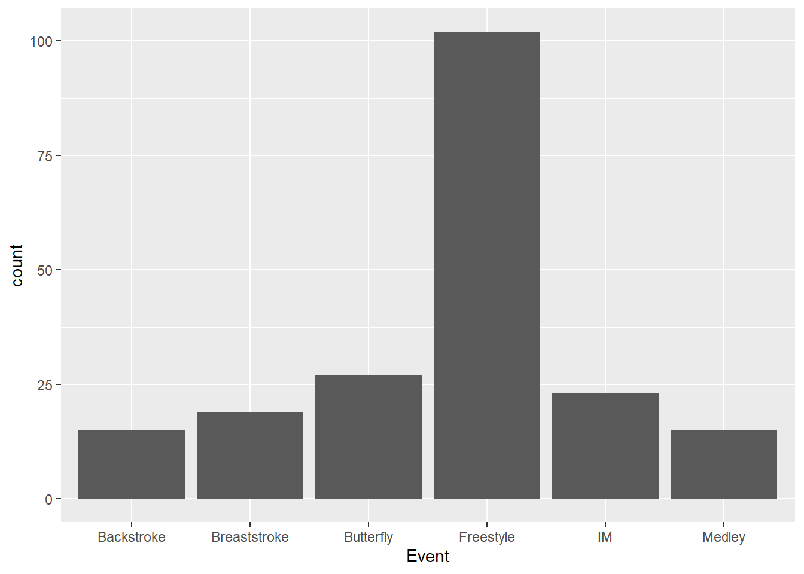
Other functions like stat_summary() or stat_boxplot() perform more complicated statistical transformations than simple counting. Let’s now address some of the complex transformations.
Statistical Transformations using stat_summary()
The fun parameter
The stat_summary() function will perform statistical transforms on your data frame, and then use that modified data frame to plotting. The most common ways to transform the data is to pass arguments to the fun and fun.data parameters.
stat_summary(
mapping = NULL,
data = NULL,
geom = "pointrange",
position = "identity",
...,
fun.data = NULL,
fun = NULL,
fun.max = NULL,
fun.min = NULL,
fun.args = list(),
na.rm = FALSE,
orientation = NA,
show.legend = NA,
inherit.aes = TRUE,
fun.y = deprecated(),
fun.ymin = deprecated(),
fun.ymax = deprecated()
)Initializing a plot and then adding stat_summary() layer will run the defaults. You will see a geom = "pointrange" which calls geom_pointrange(). A geom_pointrange() will need a y, ymin, and ymax which by default is computed using mean_se() (see console message), which is a mean +/- 1 standard error.
SWIM |>
ggplot(mapping = aes(x = Event, y = Time)) +
stat_summary()No summary function supplied, defaulting to `mean_se()`
OK, so this is a complicated first step. Let’s use a simpler approach by setting fun = mean to compute the mean in the form of a geom = "bar".
SWIM |>
ggplot(mapping = aes(x = Event, y = Time)) +
stat_summary(fun = mean,
geom = "bar"
)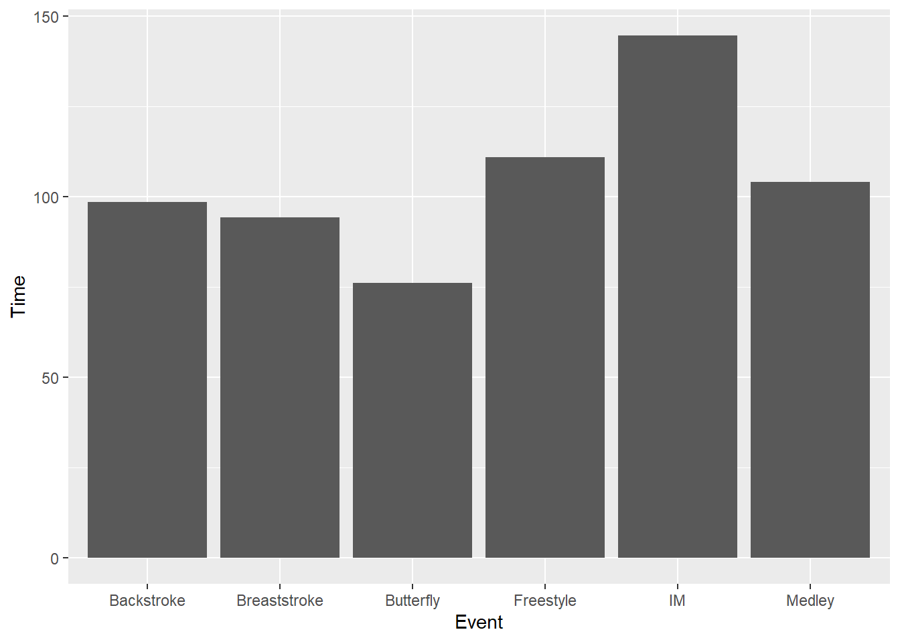
And setting fun = median to computes the median:
SWIM |>
ggplot(mapping = aes(x = Event, y = Time)) +
stat_summary(fun = median,
geom = "bar"
)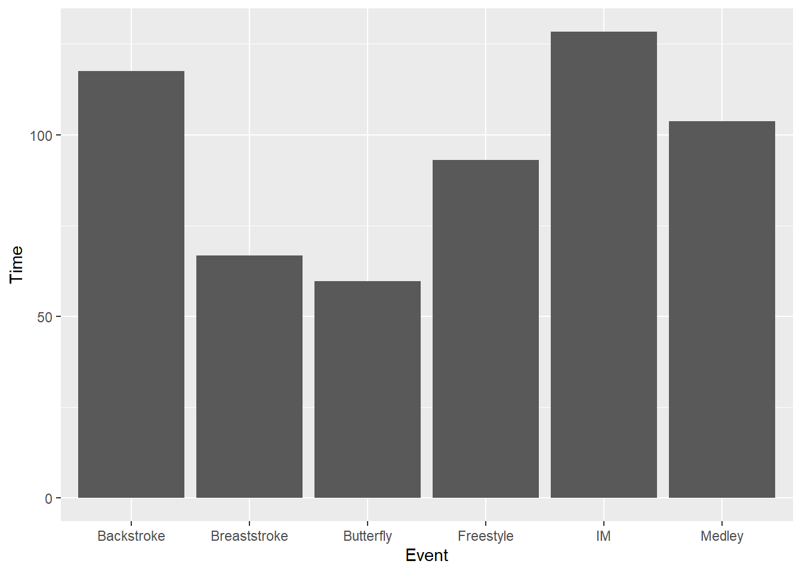
Adding a second layer illustates how you can change the function and the geom. In particular, you can see when the distribution is skewed positively, negatively, or not so much.
SWIM |>
ggplot(mapping = aes(x = Event, y = Time)) +
stat_summary(fun = median,
geom = "bar"
) +
stat_summary(fun = mean,
geom = "point"
)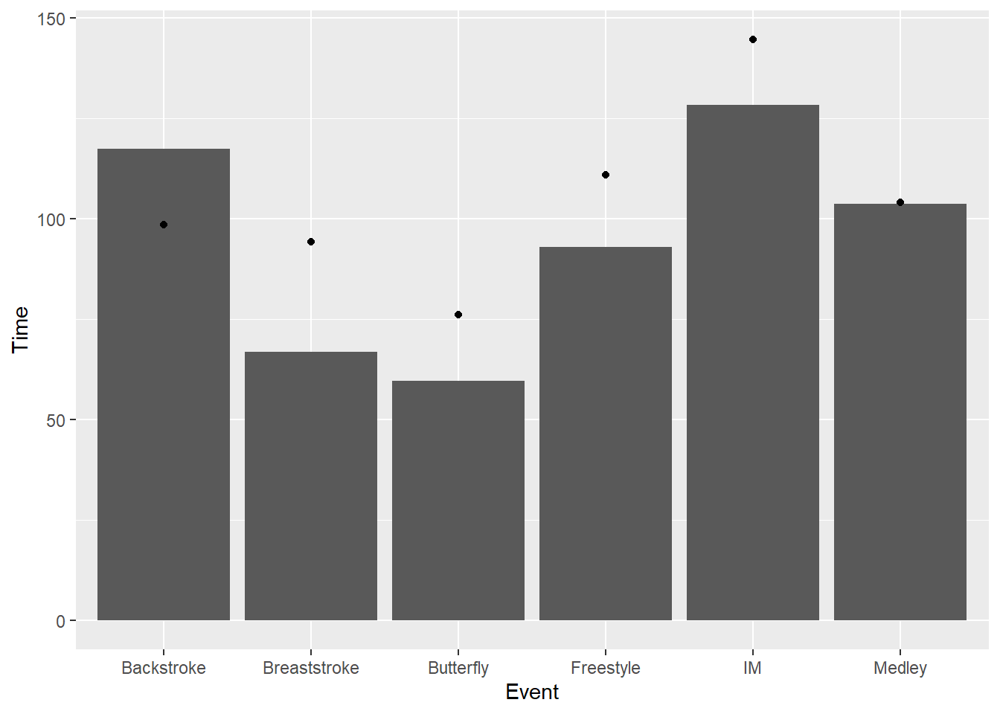
The fun.data parameter
Compared with fun, fun.data will need a function that returns a data frame with a y, ymin, and a ymax. The mean_se function used by default in stat_summary() provides those values but we can set them manually.
SWIM |>
ggplot(mapping = aes(x = Event, y = Time)) +
stat_summary(fun.data = mean_se) 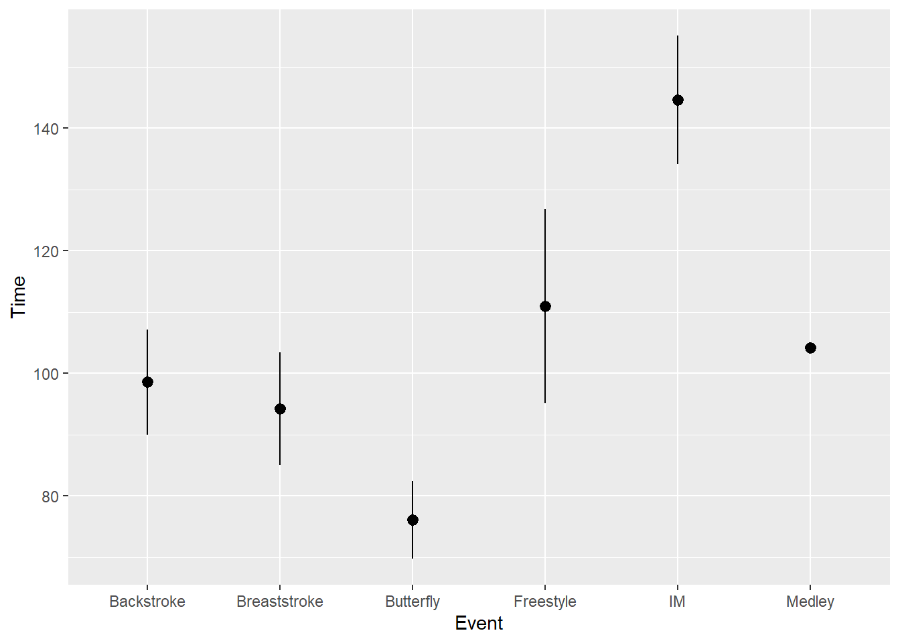
But if you want to plot 2 standard errors of the mean, you will need to use fun.args = list(mult = 2) for passing a multiple of the mean_se function. This really isn’t so bad when you understand how to do it.
SWIM |>
ggplot(mapping = aes(x = Event, y = Time)) +
stat_summary(fun.data = mean_se,
fun.args = list(mult = 2)) 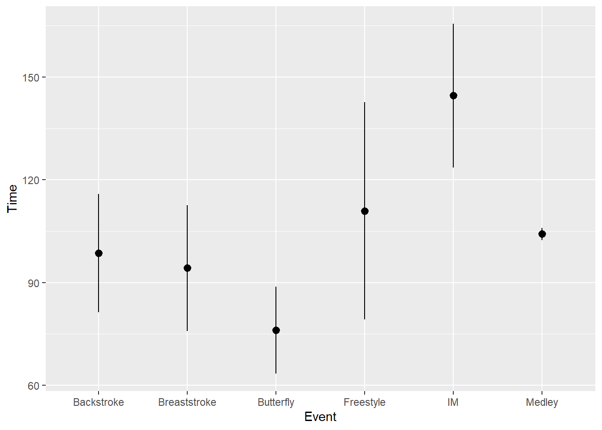
But {ggplot2} has other built in functions, like mean_sdl which will compute a mean +/- 1 standard deviation.
SWIM |>
ggplot(mapping = aes(x = Event, y = Time)) +
stat_summary(fun.data = mean_sdl) 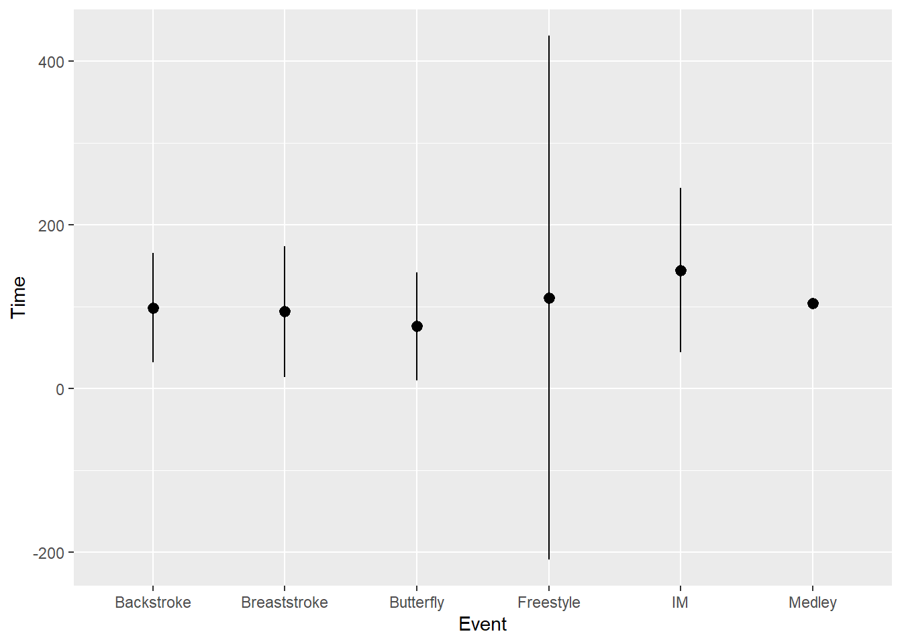
And mean_cl_boot will compute a mean and a bootstrapped confidence interval.
SWIM |>
ggplot(mapping = aes(x = Event, y = Time)) +
stat_summary(fun.data = mean_cl_boot) 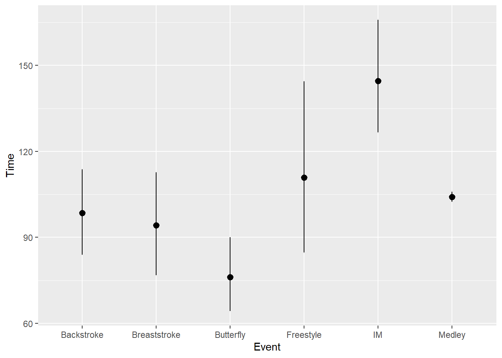
We can also create our own functions to pass to fun if there is single value or to pass to fun.data if there is a y, ymin, and ymax. Let’s create them using function().
trimmed_mean <- function(x) mean(x, na.rm = TRUE, trim = 0.1) # Trim 10% of the values
iqr_summary <- function(x) {
x = na.omit(x)
data.frame(
y = median(x),
ymin = quantile(x, 0.25),
ymax = quantile(x, 0.75)
)
}Pass fun = trimmed_mean:
SWIM |>
ggplot(mapping = aes(x = Event, y = Time)) +
stat_summary(fun = trimmed_mean) 
Or pass fun.data = iqr_summary:
SWIM |>
ggplot(mapping = aes(x = Event, y = Time)) +
stat_summary(fun.data = iqr_summary) 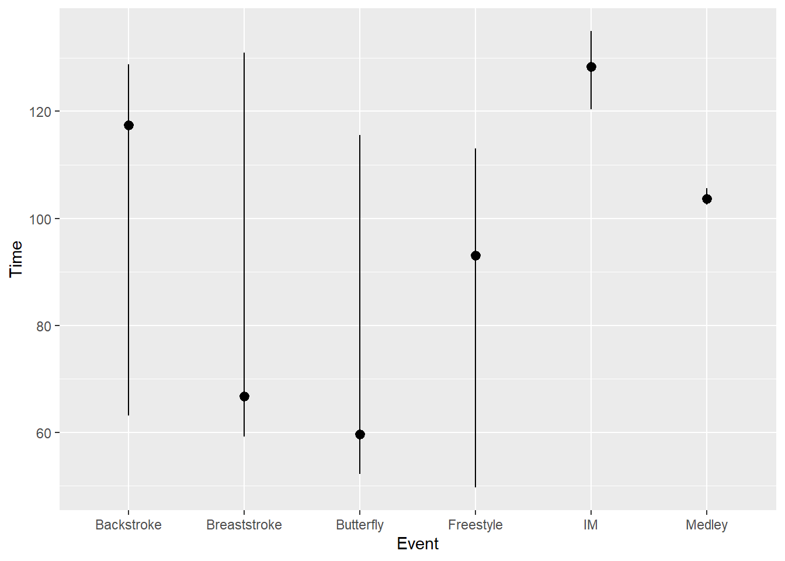
Statistical Transformations using geom_boxplot()
Although you can plot quartiles as just shown, a box-and-whisked plot is the best for this. Beyond geom_mooth() and stat_summary(), geom_boxplot() also performs statistical transformations. Although this geom is beyond the scope of this topic, we can at least see the statistical transformation is very unique, stat = "boxplot".
When you want to perform a compl
geom_boxplot(
mapping = NULL,
data = NULL,
stat = "boxplot",
position = "dodge2",
...,
outliers = TRUE,
outlier.colour = NULL,
outlier.color = NULL,
outlier.fill = NULL,
outlier.shape = 19,
outlier.size = 1.5,
outlier.stroke = 0.5,
outlier.alpha = NULL,
notch = FALSE,
notchwidth = 0.5,
staplewidth = 0,
varwidth = FALSE,
na.rm = FALSE,
orientation = NA,
show.legend = NA,
inherit.aes = TRUE
)We can see how the box plot provides quartile information as we did with a custom function. The boxplot provides additional information as well. A topic for another time.
SWIM |>
filter(Time < 500) |>
ggplot(mapping = aes(x = Event, y = Time)) +
geom_boxplot() 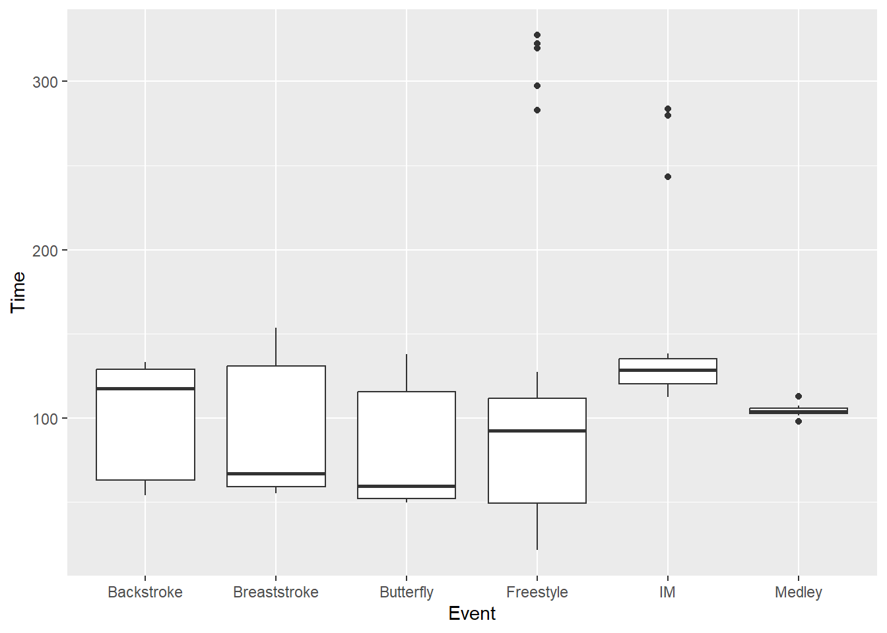
Aggregating Data using group_by()
{dplyr} has one main verb function for grouping data. group_by() orders the groups in an ascending order so that functions performed on the subgroups will return a data frame that is ordered based on the grouping variable(s). Other functions like group_map(), group_nest(), group_split(), and group_trim() exist but they are experimental for {dplyr} rpackageVersion(“dplyr”)`. Although they allow for fun tasks like passing data subsets to statistical models, their experimental life cycle suggests you might not get to comfortable with them.
Data aggregation using group_by()
Let’s go through a simple example of data aggregation using group_by().
DATA <- data.frame(
Student = c("Jim", "Sally", "June", "Mildred", "Tilford", "Beavis", "Herman", "Peppa", "Kay", "Jake", "Name Missing"),
Score = c(80, 85, 79, 80, 81, 91, 89, 60, 65, 67, 65),
School = c("A", "A", "B", "B", "C", "C", "C", "D", "D", "E", "E"),
District = c("West", "West", "West", "West", "East", "East", "East", "North", "North" , "North", "North")
) You can see that the performance for all students is on average, for example, if you didn’t know where they went to school. We would take only the mean.
DATA |>
summarize(Score = mean(Score)) # calculate average Score
1 76.54545Let’s say we try to determine average performance for “all students” if we had the data aggregated as the school level and not the individual level.
DATA |>
group_by(School) |>
summarize(Score = mean(Score)) |> # get the school level aggregated data
summarize(Score = mean(Score)) # then calculate average across all schools# A tibble: 1 × 1
Score
<dbl>
1 75.5Let’s say we try to determine average performance for “all students” if we had the data aggregated as the district level and not the individual level.
DATA |>
group_by(District) |>
summarize(Score = mean(Score)) |> # get the district level aggregated data
summarize(Score = mean(Score)) # then calculate average across all districts# A tibble: 1 × 1
Score
<dbl>
1 77.4So what’s the average performance for students? Well, that interpretation differs based on how values are treated. At the highest level, all students’ Scores are weighed equally. Each student contributes to the data in the same way. When aggregated by School, each school contributes to the calculation equally, even if the number of bodies per school differs. And finally, when data are aggregated at the District level, all districts are treated equally in the calculation independent on the number of schools in a district. Only with weighting means would you end up with the same average performance.
Measures of variability in the data, however, reveal something else. Schools differ in variability and schools within districts vary as well. Depending on the level of aggregation, you may never notice interesting patterns in data that lead to questions to investigate and later policies to change. For example, addressing a school that is left behind others or a district that is left behind others. Aggregation can also lead to inefficient allocations of resources. If one school in a district needs help rather than all schools in the district needing help, the cost may differ substantially.
std_error <- function(x) { sd(na.omit(x)) / sqrt(length(na.omit(x))) }
DATA |>
group_by(School, District) |>
summarize(Var = var(Score),
SD = sd(Score),
SEM = std_error(Score),
min = min(Score),
max = max(Score)
) |>
mutate(range = (max - min))`summarise()` has grouped output by 'School'. You can override using the
`.groups` argument.# A tibble: 5 × 8
# Groups: School [5]
School District Var SD SEM min max range
<chr> <chr> <dbl> <dbl> <dbl> <dbl> <dbl> <dbl>
1 A West 12.5 3.54 2.5 80 85 5
2 B West 0.5 0.707 0.5 79 80 1
3 C East 28 5.29 3.06 81 91 10
4 D North 12.5 3.54 2.5 60 65 5
5 E North 2 1.41 1 65 67 2Comparing mutate() with summarize()
{dplyr} has two main verb functions for creating variables. They operate differently and their returned tibble also differ. If you have not been paying attention to the returned tibble post calculation, you might have overlooked the differences.
Grouping structure of group_by() and mutate()
Let’s mutate() the mean for Score after sub-setting with group_by().
DATA |>
group_by(School, District) |>
mutate(Score = mean(na.omit(Score)))# A tibble: 11 × 4
# Groups: School, District [5]
Student Score School District
<chr> <dbl> <chr> <chr>
1 Jim 82.5 A West
2 Sally 82.5 A West
3 June 79.5 B West
4 Mildred 79.5 B West
5 Tilford 87 C East
6 Beavis 87 C East
7 Herman 87 C East
8 Peppa 62.5 D North
9 Kay 62.5 D North
10 Jake 66 E North
11 Name Missing 66 E North There are two things to watch when using this mutate() following group_by().
1. A Score will be assigned to each row/case or Student in the data frame.
When schools and districts are grouped, each student in the same school will have the same assigned average value. All rows are maintained, none dropped.
2. The returned tibble takes on a new structure.
Looking at the feedback in the console, you see the following report preceding the data.
A tibble: 11 × 3
# Groups: School, District [5]You also see this structure using glimpse().
DATA |>
group_by(School, District) |>
mutate(Score = mean(na.omit(Score))) |>
glimpse()Rows: 11
Columns: 4
Groups: School, District [5]
$ Student <chr> "Jim", "Sally", "June", "Mildred", "Tilford", "Beavis", "Herm…
$ Score <dbl> 82.5, 82.5, 79.5, 79.5, 87.0, 87.0, 87.0, 62.5, 62.5, 66.0, 6…
$ School <chr> "A", "A", "B", "B", "C", "C", "C", "D", "D", "E", "E"
$ District <chr> "West", "West", "West", "West", "East", "East", "East", "Nort…Rows: 11
Columns: 3
Groups: School, District [5]What does the [5] mean? Well, before we answer this, let’s use summarize().
Grouping structure of group_by() and summarize()
Let’s summarize() the mean for Score after sub-setting with group_by().
DATA |>
group_by(School, District) |>
summarize(Score = mean(Score))`summarise()` has grouped output by 'School'. You can override using the
`.groups` argument.# A tibble: 5 × 3
# Groups: School [5]
School District Score
<chr> <chr> <dbl>
1 A West 82.5
2 B West 79.5
3 C East 87
4 D North 62.5
5 E North 66 There are two things to watch when using this summarize() following group_by().
1. A Score average is assigned to each row/case or School in this aggregated data frame.
When schools and districts are grouped, each school will have its own average value. Rows from the data frame are dropped as are columns that are not passed to group_by(). In this case, School, District, and the new variable, Score are returned.
2. The returned tibble takes on a new structure.
The feedback in the console is a little more detailed here.
`summarise()` has grouped output by 'School'. You can override using the `.groups` argument.
# A tibble: 5 × 3
# Groups: School [5]You see reference to overriding the grouping using .groups. According to the tidyverse documentation for grouping, this parameter “controls the grouping structure of the output. The historical behavior of removing the right hand side grouping variable corresponds to .groups = "drop_last" without a message or .groups = NULL with a message (the default)”.
You have most likely paid little attention to this message. By default summarize() keeps the first grouping variable passed to group_by() in the returned tibble. This is why you see School referenced and not District or both variables. So, do you want your data frame to contain groups or no groups? Stated differently, do you just want that data summarized by your grouping variables and have a simple nxm data frame or do you want something more complex?
To see the structure better, let’s first look a the structure of DATA and then more closely at the summarized version.
str(DATA)'data.frame': 11 obs. of 4 variables:
$ Student : chr "Jim" "Sally" "June" "Mildred" ...
$ Score : num 80 85 79 80 81 91 89 60 65 67 ...
$ School : chr "A" "A" "B" "B" ...
$ District: chr "West" "West" "West" "West" ...Let’s assign the summarized data frame to an object for inspection.
DSUM <-
DATA |>
group_by(School, District) |>
summarize(Score = mean(Score))`summarise()` has grouped output by 'School'. You can override using the
`.groups` argument.For DSUM, the structure is different. In particular, you see reference to (S3: grouped_df/tbl_df/tbl/data.frame). This tells you that the data frame is not a simple nxm but contains groups. You could think of this as 3 nxm data frames organized together. For more details, see the dplyr documentation.
str(DSUM)gropd_df [5 × 3] (S3: grouped_df/tbl_df/tbl/data.frame)
$ School : chr [1:5] "A" "B" "C" "D" ...
$ District: chr [1:5] "West" "West" "East" "North" ...
$ Score : num [1:5] 82.5 79.5 87 62.5 66
- attr(*, "groups")= tibble [5 × 2] (S3: tbl_df/tbl/data.frame)
..$ School: chr [1:5] "A" "B" "C" "D" ...
..$ .rows : list<int> [1:5]
.. ..$ : int 1
.. ..$ : int 2
.. ..$ : int 3
.. ..$ : int 4
.. ..$ : int 5
.. ..@ ptype: int(0)
..- attr(*, ".drop")= logi TRUEgroup_by() and summarize() with .groups
When you group data using group_by() and then summarize(), the summary variables (e.g., mean) will result in a single row for each level of a single grouping variable. If there are more than one grouping variable, the additional grouping variable will be introduced to the data frame as a second column. The total number of rows in the data frame will be equal to the number of levels of group 1 x number of levels of group 2 if an only if each levels of group 1 has a corresponding level for group 2,
for example:
sex age mean
men young x
men old x
women young x
women old xIf there is no pairing of levels in the data (e.g., no men who are old), that row will be omitted from the returned data frame.
for example:
sex age mean
men young x
women young x
women old xrather than:
sex age mean
men young x
men old NA
women young x
women old xYou really need to query ?dplyr::summarize to understand .groups, which controls the grouping of the returned data frame. This is also experimental to summarize(), so it might not be available in the future.
There are four argument options:
"drop_last": dropping the last level of grouping. This was the only supported option before version 1.0.0."drop": All levels of grouping are dropped."keep": Same grouping structure as .data."rowwise": Each row is its own group.
.groups = "drop_last":
SWIM |>
group_by(Event, Distance) |>
summarize(Time = mean(Time),
.groups = "drop_last")# A tibble: 14 × 3
# Groups: Event [6]
Event Distance Time
<chr> <int> <dbl>
1 Backstroke 100 59.8
2 Backstroke 200 124.
3 Breaststroke 100 61.6
4 Breaststroke 200 139.
5 Butterfly 100 55.3
6 Butterfly 200 125.
7 Freestyle 50 23.6
8 Freestyle 100 51.9
9 Freestyle 200 107.
10 Freestyle 500 306.
11 Freestyle 1650 1143.
12 IM 200 126.
13 IM 400 269.
14 Medley 200 104. You will see that the grouping for Distance is not in the grouping structure because it was the last grouping.
# A tibble: 14 × 3
# Groups: Event [6]
Event Distance Time.groups = "drop":
SWIM |>
group_by(Event, Distance) |>
summarize(Time = mean(Time),
.groups = "drop")# A tibble: 14 × 3
Event Distance Time
<chr> <int> <dbl>
1 Backstroke 100 59.8
2 Backstroke 200 124.
3 Breaststroke 100 61.6
4 Breaststroke 200 139.
5 Butterfly 100 55.3
6 Butterfly 200 125.
7 Freestyle 50 23.6
8 Freestyle 100 51.9
9 Freestyle 200 107.
10 Freestyle 500 306.
11 Freestyle 1650 1143.
12 IM 200 126.
13 IM 400 269.
14 Medley 200 104. You will see that all group are dropped from the grouping structure.
# A tibble: 14 × 3
Event Distance Time.groups = "keep":
SWIM |>
group_by(Event, Distance) |>
summarize(Time = mean(Time),
.groups = "keep")# A tibble: 14 × 3
# Groups: Event, Distance [14]
Event Distance Time
<chr> <int> <dbl>
1 Backstroke 100 59.8
2 Backstroke 200 124.
3 Breaststroke 100 61.6
4 Breaststroke 200 139.
5 Butterfly 100 55.3
6 Butterfly 200 125.
7 Freestyle 50 23.6
8 Freestyle 100 51.9
9 Freestyle 200 107.
10 Freestyle 500 306.
11 Freestyle 1650 1143.
12 IM 200 126.
13 IM 400 269.
14 Medley 200 104. You will see that all group are kept in the grouping structure.
# A tibble: 14 × 3
# Groups: Event, Distance [14]
Event Distance Time.groups = "rowwise":
SWIM |>
group_by(Event, Distance) |>
summarize(Time = mean(Time),
.groups = "rowwise")# A tibble: 14 × 3
# Rowwise: Event, Distance
Event Distance Time
<chr> <int> <dbl>
1 Backstroke 100 59.8
2 Backstroke 200 124.
3 Breaststroke 100 61.6
4 Breaststroke 200 139.
5 Butterfly 100 55.3
6 Butterfly 200 125.
7 Freestyle 50 23.6
8 Freestyle 100 51.9
9 Freestyle 200 107.
10 Freestyle 500 306.
11 Freestyle 1650 1143.
12 IM 200 126.
13 IM 400 269.
14 Medley 200 104. You will see that there groups but these are not based on the
# A tibble: 14 × 3
# Rowwise: Event, DistanceThe grouping structure always matters for subsequent computations. But with "rowwise" you will see this clearly. Following from above, let’s say we wanted to compute the mean across all of the Events in the data frame returned by group_by() then summarize(). We add mutate(mean = mean(Time)) on a new line of our piped code block.
SWIM |>
group_by(Event, Distance) |>
summarize(Time = mean(Time),
.groups = "rowwise") |>
mutate(mean = mean(Time))# A tibble: 14 × 4
# Rowwise: Event, Distance
Event Distance Time mean
<chr> <int> <dbl> <dbl>
1 Backstroke 100 59.8 59.8
2 Backstroke 200 124. 124.
3 Breaststroke 100 61.6 61.6
4 Breaststroke 200 139. 139.
5 Butterfly 100 55.3 55.3
6 Butterfly 200 125. 125.
7 Freestyle 50 23.6 23.6
8 Freestyle 100 51.9 51.9
9 Freestyle 200 107. 107.
10 Freestyle 500 306. 306.
11 Freestyle 1650 1143. 1143.
12 IM 200 126. 126.
13 IM 400 269. 269.
14 Medley 200 104. 104. The mean column does not contain a single mean replicated for each row in the data frame. Rather the grouping was per row, so each row has its one mean. The mean of a single value is, of course, itself.
Revisiting ".groups = drop_last":
Returning to the default .groups structure, which is "drop_last", we can add the same mutate() to see what happens.
SWIM |>
group_by(Event, Distance) |>
summarize(Time = mean(Time),
.groups = "drop_last") |>
mutate(mean = mean(Time))# A tibble: 14 × 4
# Groups: Event [6]
Event Distance Time mean
<chr> <int> <dbl> <dbl>
1 Backstroke 100 59.8 92.1
2 Backstroke 200 124. 92.1
3 Breaststroke 100 61.6 100.
4 Breaststroke 200 139. 100.
5 Butterfly 100 55.3 90.4
6 Butterfly 200 125. 90.4
7 Freestyle 50 23.6 326.
8 Freestyle 100 51.9 326.
9 Freestyle 200 107. 326.
10 Freestyle 500 306. 326.
11 Freestyle 1650 1143. 326.
12 IM 200 126. 197.
13 IM 400 269. 197.
14 Medley 200 104. 104. The mean column still has different values but they are replicated on rows with the same Event group. This is because the data are grouped that way.
Revisiting .groups = "drop":
Let’s again add the same mutate() to see what happens.
SWIM |>
group_by(Event, Distance) |>
summarize(Time = mean(Time),
.groups = "drop") |>
mutate(mean = mean(Time))# A tibble: 14 × 4
Event Distance Time mean
<chr> <int> <dbl> <dbl>
1 Backstroke 100 59.8 193.
2 Backstroke 200 124. 193.
3 Breaststroke 100 61.6 193.
4 Breaststroke 200 139. 193.
5 Butterfly 100 55.3 193.
6 Butterfly 200 125. 193.
7 Freestyle 50 23.6 193.
8 Freestyle 100 51.9 193.
9 Freestyle 200 107. 193.
10 Freestyle 500 306. 193.
11 Freestyle 1650 1143. 193.
12 IM 200 126. 193.
13 IM 400 269. 193.
14 Medley 200 104. 193.Consider ungroup():
.groups = "drop" in effect works the same as does ungroup(). The grouping structure is broken and all subsequent operations are based on the ungrouped data frame.
SWIM |>
group_by(Event, Distance) |>
summarize(Time = mean(Time)) |>
ungroup() |>
mutate(mean = mean(Time))`summarise()` has grouped output by 'Event'. You can override using the
`.groups` argument.# A tibble: 14 × 4
Event Distance Time mean
<chr> <int> <dbl> <dbl>
1 Backstroke 100 59.8 193.
2 Backstroke 200 124. 193.
3 Breaststroke 100 61.6 193.
4 Breaststroke 200 139. 193.
5 Butterfly 100 55.3 193.
6 Butterfly 200 125. 193.
7 Freestyle 50 23.6 193.
8 Freestyle 100 51.9 193.
9 Freestyle 200 107. 193.
10 Freestyle 500 306. 193.
11 Freestyle 1650 1143. 193.
12 IM 200 126. 193.
13 IM 400 269. 193.
14 Medley 200 104. 193.Keep in mind that functions work as they are programmed to work. Functions do not work like you think they work. You must understand the function and check our work to ensure your calculations are what you intend them to be.
The order of operations matters
To illustrate further, consider you want to calculate some summary statistics. You set out to obtain the mean and the standard deviation for your data. Those computations will be performed according to the grouping structure.
When you compute standard deviation and the mean of Time, you assign the mean to Time because you want your plot to contain a clean name rather than one like Time_Mean that you will have to address in the plot.
SWIM |>
group_by(Event, Distance) |>
summarize(Time_sd = sd(Time), # get sd of Time
Time = mean(Time) # get mean, assign to same name
)`summarise()` has grouped output by 'Event'. You can override using the
`.groups` argument.# A tibble: 14 × 4
# Groups: Event [6]
Event Distance Time_sd Time
<chr> <int> <dbl> <dbl>
1 Backstroke 100 4.47 59.8
2 Backstroke 200 8.02 124.
3 Breaststroke 100 5.76 61.6
4 Breaststroke 200 10.5 139.
5 Butterfly 100 4.32 55.3
6 Butterfly 200 7.74 125.
7 Freestyle 50 1.99 23.6
8 Freestyle 100 4.00 51.9
9 Freestyle 200 10.8 107.
10 Freestyle 500 20.3 306.
11 Freestyle 1650 98.2 1143.
12 IM 200 8.13 126.
13 IM 400 22.2 269.
14 Medley 200 3.41 104. Both variables use the same data because the standard deviation assigns the value to a different variable name Time_sd. The mean() is not based on some changed variable.
The output is different from the one returned when the mean is computed before the standard deviation and in particular when the mean is assigned to Time. In this case, the standard deviation is based on this new Time variable. Because the standard deviation is a measure of variability, and Time does not vary based on the grouping structure, NA is returned.
SWIM |>
group_by(Event, Distance) |>
summarize(Time = mean(Time), # get mean, assign to same name
Time_sd = sd(Time) # get sd of Time
)`summarise()` has grouped output by 'Event'. You can override using the
`.groups` argument.# A tibble: 14 × 4
# Groups: Event [6]
Event Distance Time Time_sd
<chr> <int> <dbl> <dbl>
1 Backstroke 100 59.8 NA
2 Backstroke 200 124. NA
3 Breaststroke 100 61.6 NA
4 Breaststroke 200 139. NA
5 Butterfly 100 55.3 NA
6 Butterfly 200 125. NA
7 Freestyle 50 23.6 NA
8 Freestyle 100 51.9 NA
9 Freestyle 200 107. NA
10 Freestyle 500 306. NA
11 Freestyle 1650 1143. NA
12 IM 200 126. NA
13 IM 400 269. NA
14 Medley 200 104. NAIf you really wanted the standard deviation of all the means, consider ungrouping and then compute the standard deviation or use .groups = "drop" in summarize(). Realize, however, this latter functionality is experimental and may not work sometime later. You are likely better off using ungroup().
SWIM |>
group_by(Event, Distance) |>
summarize(Time = mean(Time)) |> # get mean, assign to same name
ungroup() |>
mutate(sd = sd(Time))`summarise()` has grouped output by 'Event'. You can override using the
`.groups` argument.# A tibble: 14 × 4
Event Distance Time sd
<chr> <int> <dbl> <dbl>
1 Backstroke 100 59.8 285.
2 Backstroke 200 124. 285.
3 Breaststroke 100 61.6 285.
4 Breaststroke 200 139. 285.
5 Butterfly 100 55.3 285.
6 Butterfly 200 125. 285.
7 Freestyle 50 23.6 285.
8 Freestyle 100 51.9 285.
9 Freestyle 200 107. 285.
10 Freestyle 500 306. 285.
11 Freestyle 1650 1143. 285.
12 IM 200 126. 285.
13 IM 400 269. 285.
14 Medley 200 104. 285.More on Grouping Structure
We can now also consider ways to create column variables and a corresponding grouping structure within the group_by() verb.
New Variable Columns
group_by() is not designed to create new variables but rather create groups. The function, however, does not require variables in a data frame in order to group based on their levels or differences in values.
group_by() using a function
Heretofore, we have grouped by column variables in a data frame. But you can also group in other ways, for example, by a variable calculated by a function. For example, if you wanted to group by standard deviations, you could calculated the standard deviation (Score-mean(Score)) / sd(Score) for each student and then cut() that variable into groups. cut will take a numeric vector variable and turn it into a factor variable of n groups as determined by what you pass to breaks. There is also an argument to make the factor ordered if you wish, ordered_result = TRUE but the default behavior does not order the factor. You can also change the level labels if you inspect the function.
DATA |>
group_by(z_factor = cut(x = ((Score - mean(Score)) / sd(Score)),
breaks = 5,
ordered_result = TRUE
)
)# A tibble: 11 × 5
# Groups: z_factor [4]
Student Score School District z_factor
<chr> <dbl> <chr> <chr> <ord>
1 Jim 80 A West (0.194,0.781]
2 Sally 85 A West (0.781,1.37]
3 June 79 B West (0.194,0.781]
4 Mildred 80 B West (0.194,0.781]
5 Tilford 81 C East (0.194,0.781]
6 Beavis 91 C East (0.781,1.37]
7 Herman 89 C East (0.781,1.37]
8 Peppa 60 D North (-1.57,-0.979]
9 Kay 65 D North (-1.57,-0.979]
10 Jake 67 E North (-0.979,-0.392]
11 Name Missing 65 E North (-1.57,-0.979] You can see that there are 4 different levels of the grouping variable. The tibble is grouped of course too.
If you struggle with remembering the formula for a z score, scale() will to the same thing.
DATA |>
mutate(z = (Score - mean(Score)) / sd(Score),
scale = scale(Score)
) Student Score School District z scale
1 Jim 80 A West 0.3269018 0.3269018
2 Sally 85 A West 0.8000492 0.8000492
3 June 79 B West 0.2322724 0.2322724
4 Mildred 80 B West 0.3269018 0.3269018
5 Tilford 81 C East 0.4215313 0.4215313
6 Beavis 91 C East 1.3678261 1.3678261
7 Herman 89 C East 1.1785671 1.1785671
8 Peppa 60 D North -1.5656877 -1.5656877
9 Kay 65 D North -1.0925403 -1.0925403
10 Jake 67 E North -0.9032814 -0.9032814
11 Name Missing 65 E North -1.0925403 -1.0925403If you want n groups based on specific breaks, then pass a vector of those break units. For example, if we want levels to correspond to some meaningful standard-deviation cuts. For example, if you wanted to group those with z scores ranging from infinitely negative to -2, -2 to -1, - to 1, 1 to 2, and 2 to infinitely large, you could specify the breaks. If there are no values in those ranges, then there won’t be any data for those breaks.
DATA |>
group_by(z_factor = cut(x = scale(Score),
breaks = c(-Inf, -2, -1, 1, 2, Inf),
ordered_result = TRUE
),
) |>
ungroup() # A tibble: 11 × 5
Student Score School District z_factor
<chr> <dbl> <chr> <chr> <ord>
1 Jim 80 A West (-1,1]
2 Sally 85 A West (-1,1]
3 June 79 B West (-1,1]
4 Mildred 80 B West (-1,1]
5 Tilford 81 C East (-1,1]
6 Beavis 91 C East (1,2]
7 Herman 89 C East (1,2]
8 Peppa 60 D North (-2,-1]
9 Kay 65 D North (-2,-1]
10 Jake 67 E North (-1,1]
11 Name Missing 65 E North (-2,-1] You can also just group by the function without using cut() if you wish to group by those with identical values on the variable. In this case, using count() or tally() reveals there are only two instances with the same score.
DATA |>
group_by(z_factor = ((Score - mean(Score)) / sd(Score))) |>
count(sort = TRUE) # tally(sort = TRUE)# A tibble: 9 × 2
# Groups: z_factor [9]
z_factor n
<dbl> <int>
1 -1.09 2
2 0.327 2
3 -1.57 1
4 -0.903 1
5 0.232 1
6 0.422 1
7 0.800 1
8 1.18 1
9 1.37 1Add/drop Grouping Variable Columns
By default, group_by() on a data frame that is already grouped (see earlier on grouped data frame), the existing grouping structure will be replaced by new grouping structure.
Let’s get an example. Please note that this example assigned the tibble to an object but whether you assign or not, the grouped structure exists. So functions that follow the group_by() keep that structure.
school_grouped <-
DATA |>
group_by(School)
school_grouped# A tibble: 11 × 4
# Groups: School [5]
Student Score School District
<chr> <dbl> <chr> <chr>
1 Jim 80 A West
2 Sally 85 A West
3 June 79 B West
4 Mildred 80 B West
5 Tilford 81 C East
6 Beavis 91 C East
7 Herman 89 C East
8 Peppa 60 D North
9 Kay 65 D North
10 Jake 67 E North
11 Name Missing 65 E North Now group by a new column:
school_grouped |>
group_by(District)# A tibble: 11 × 4
# Groups: District [3]
Student Score School District
<chr> <dbl> <chr> <chr>
1 Jim 80 A West
2 Sally 85 A West
3 June 79 B West
4 Mildred 80 B West
5 Tilford 81 C East
6 Beavis 91 C East
7 Herman 89 C East
8 Peppa 60 D North
9 Kay 65 D North
10 Jake 67 E North
11 Name Missing 65 E North You will see the grouping structure has changed.
# A tibble: 11 × 4
# Groups: District [3]Retain Grouping
If you want to retain the existing group, you would need to use .add = TRUE.
school_grouped |>
group_by(District, .add = TRUE)# A tibble: 11 × 4
# Groups: School, District [5]
Student Score School District
<chr> <dbl> <chr> <chr>
1 Jim 80 A West
2 Sally 85 A West
3 June 79 B West
4 Mildred 80 B West
5 Tilford 81 C East
6 Beavis 91 C East
7 Herman 89 C East
8 Peppa 60 D North
9 Kay 65 D North
10 Jake 67 E North
11 Name Missing 65 E North Notice in the console, that both School and District are included in the groups.
# A tibble: 11 × 4
# Groups: School, District [5]Why Care About Grouping Structure
Well, the functions you apply to a grouped tibble will sometimes lead to calculations that are not what you intend. We provided some examples earlier but given the importance of the issue, we may benefit from another example.
Let’s say you want to compute the average for each school and add that school average for each student. This would tell you how the student differs from their school performance. Then you want to obtain the mean of all the schools and see how the school differs from all the schools.
You code it out:
DATA |>
# group
group_by(School) |>
# calculate the mean of Score for each School
mutate(School_Mean = mean(Score)) |>
# calculate the mean of all values (think Grand Mean from stats)
mutate(Mean_of_all = mean(School_Mean)) |>
# calculate the school performance relative to all
mutate(School_Performance = factor(case_when(
School_Mean < Mean_of_all ~ "Below Average",
School_Mean == Mean_of_all ~ "Average",
School_Mean > Mean_of_all ~ "Above Average"
),
ordered = TRUE)
)# A tibble: 11 × 7
# Groups: School [5]
Student Score School District School_Mean Mean_of_all School_Performance
<chr> <dbl> <chr> <chr> <dbl> <dbl> <ord>
1 Jim 80 A West 82.5 82.5 Average
2 Sally 85 A West 82.5 82.5 Average
3 June 79 B West 79.5 79.5 Average
4 Mildred 80 B West 79.5 79.5 Average
5 Tilford 81 C East 87 87 Average
6 Beavis 91 C East 87 87 Average
7 Herman 89 C East 87 87 Average
8 Peppa 60 D North 62.5 62.5 Average
9 Kay 65 D North 62.5 62.5 Average
10 Jake 67 E North 66 66 Average
11 Name Missing 65 E North 66 66 Average Perfect. OK, let’s plot it. Oh but first let me inspect the data. Um, why is School_Performance the same for all Students? Schools are not performing the same so they cannot all be average. Check your case_when() for errors because that where the new variable was created. Then you spend 40 days and 40 nights trying to fix your code. No matter what you do with case_when(), you cannot fix the problem. So you try to create 42 data frames to solve your problem. Even grandma knows that is a ridiculous strategy. She suggests you read the documentation for all of the functions you used because one time her pot-luck cake flopped and she inspected the expiration date for all of her ingredients and found the baking soda was old.
You discover that the grouping structure is retained on all operations until that grouping structure is removed or replaced.
ungroup()
Whereas summarize has a .groups functionality, mutate() does not. In order to have a simple data frame use follow group_by() and mutate() with ungroup(). But ungroup() can be used following both functions if that approach makes more sense to you.
Let’s add an ungroup() directly after performing the operation that needed the grouping structure.
DATA |>
# group
group_by(School) |>
# calculate the mean of Score for each School
mutate(School_Mean = mean(Score)) |>
# break that grouping structure
ungroup() |>
# calculate the mean of all values (think Grand Mean from stats)
mutate(Mean_of_all = mean(School_Mean)) |>
# calculate the school performance relative to all
mutate(School_Performance = factor(case_when(
School_Mean < Mean_of_all ~ "Below Average",
School_Mean == Mean_of_all ~ "Average",
School_Mean > Mean_of_all ~ "Above Average"
),
ordered = TRUE)
)# A tibble: 11 × 7
Student Score School District School_Mean Mean_of_all School_Performance
<chr> <dbl> <chr> <chr> <dbl> <dbl> <ord>
1 Jim 80 A West 82.5 76.5 Above Average
2 Sally 85 A West 82.5 76.5 Above Average
3 June 79 B West 79.5 76.5 Above Average
4 Mildred 80 B West 79.5 76.5 Above Average
5 Tilford 81 C East 87 76.5 Above Average
6 Beavis 91 C East 87 76.5 Above Average
7 Herman 89 C East 87 76.5 Above Average
8 Peppa 60 D North 62.5 76.5 Below Average
9 Kay 65 D North 62.5 76.5 Below Average
10 Jake 67 E North 66 76.5 Below Average
11 Name Missing 65 E North 66 76.5 Below Average Yes! Mean_of_all is now a true grand mean based on all of the data with no grouping at all. Comparing Mean_of_all to School_Mean provides two classifications.
Variable loss with summarize()
Because summarize() returns a tibble based on the grouping structure, you will lose all variables that are not in the grouping structure. By design, it no longer allows you to return a data frame with duplicated rows based on the variables passed to group_by().
Returning to the school data, what this means, is that you cannot retain the School if you group by the District in order to obtain averages by district.
DATA |>
group_by(District) |>
summarize(Mean = mean(Score))# A tibble: 3 × 2
District Mean
<chr> <dbl>
1 East 87
2 North 64.2
3 West 81 If you try to add School to group_by(), then you will only obtain the averages by schools within districts.
DATA |>
group_by(School, District) |>
summarize(Mean = mean(Score)) `summarise()` has grouped output by 'School'. You can override using the
`.groups` argument.# A tibble: 5 × 3
# Groups: School [5]
School District Mean
<chr> <chr> <dbl>
1 A West 82.5
2 B West 79.5
3 C East 87
4 D North 62.5
5 E North 66 You can try to summarize based on a variable without assign it to a function but that is no longer allowed with summarize(). The following code block will throw an error.
DATA |>
group_by(District) |>
summarize(Mean = mean(Score),
School # add school
)An alternative to summarize(): reframe()
Instead, you can use reframe(), which allows for previous functionality of summarize() that is now deprecated.
DATA |>
group_by(District) |>
reframe(Mean = mean(Score),
School,
Student
)# A tibble: 11 × 4
District Mean School Student
<chr> <dbl> <chr> <chr>
1 East 87 C Tilford
2 East 87 C Beavis
3 East 87 C Herman
4 North 64.2 D Peppa
5 North 64.2 D Kay
6 North 64.2 E Jake
7 North 64.2 E Name Missing
8 West 81 A Jim
9 West 81 A Sally
10 West 81 B June
11 West 81 B Mildred Remember that the operations in summarize(), mutate(), and reframe() all depend on the grouping structure. If you wanted to add variables, you would need to group a different way and you would need to add all variables into summarize() every step of the way.
DATA |>
group_by(District) |>
reframe(District_Mean = mean(Score),
School,
Student,
Score
) |>
ungroup() |>
group_by(School) |>
reframe(School_Mean = mean(Score),
School,
Student,
Score,
District_Mean
) |>
ungroup()# A tibble: 11 × 5
School School_Mean Student Score District_Mean
<chr> <dbl> <chr> <dbl> <dbl>
1 A 82.5 Jim 80 81
2 A 82.5 Sally 85 81
3 B 79.5 June 79 81
4 B 79.5 Mildred 80 81
5 C 87 Tilford 81 87
6 C 87 Beavis 91 87
7 C 87 Herman 89 87
8 D 62.5 Peppa 60 64.2
9 D 62.5 Kay 65 64.2
10 E 66 Jake 67 64.2
11 E 66 Name Missing 65 64.2Retaining distinct data after mutate() using distinct()`
This is just too tedious. Your better option is mutate() as all variables will be added to the full data frame. All variables are neatly and logically appended to the right hand side of the data frame.
DATA |>
group_by(District) |>
mutate(District_Mean = mean(Score)) |>
group_by(School) |>
mutate(School_Mean = mean(Score))# A tibble: 11 × 6
# Groups: School [5]
Student Score School District District_Mean School_Mean
<chr> <dbl> <chr> <chr> <dbl> <dbl>
1 Jim 80 A West 81 82.5
2 Sally 85 A West 81 82.5
3 June 79 B West 81 79.5
4 Mildred 80 B West 81 79.5
5 Tilford 81 C East 87 87
6 Beavis 91 C East 87 87
7 Herman 89 C East 87 87
8 Peppa 60 D North 64.2 62.5
9 Kay 65 D North 64.2 62.5
10 Jake 67 E North 64.2 66
11 Name Missing 65 E North 64.2 66 Also, when you use a new group_by(), it will replace previous grouping structure by default. The following two code blocks return the same data frame.
DATA |>
group_by(District) |>
mutate(District_Mean = mean(Score)) |>
group_by(School) |>
mutate(School_Mean = mean(Score))
DATA |>
group_by(District) |>
mutate(District_Mean = mean(Score)) |>
ungroup() |> # ungroup
group_by(School) |>
mutate(School_Mean = mean(Score))If you wish those variables to remain, you have a couple of options. The first would be to use mutate().
Notice, however, that if you want to extract the summaries from the large data frame as you would have had you used summarize() , you cannot just select() your column of interest because the repetitions will exist for each row in the data frame.
DATA |>
group_by(District) |>
mutate(District_Mean = mean(Score)) |>
select(School, District_Mean)Adding missing grouping variables: `District`# A tibble: 11 × 3
# Groups: District [3]
District School District_Mean
<chr> <chr> <dbl>
1 West A 81
2 West A 81
3 West B 81
4 West B 81
5 East C 87
6 East C 87
7 East C 87
8 North D 64.2
9 North D 64.2
10 North E 64.2
11 North E 64.2You can obtain the rows that are distinct() (unique) and then pick() the ones to keep.
DATA |>
group_by(District) |>
mutate(District_Mean = mean(Score)) |>
distinct(pick(District, District_Mean))# A tibble: 3 × 2
# Groups: District [3]
District District_Mean
<chr> <dbl>
1 West 81
2 East 87
3 North 64.2But you will need to ungroup() before distinct() because, as we have mentioned before, all subsequent functions other than group_by() will maintain the previous grouping structure by default.
DATA |>
group_by(School) |>
mutate(School_Mean = mean(Score)) |>
ungroup()# A tibble: 11 × 5
Student Score School District School_Mean
<chr> <dbl> <chr> <chr> <dbl>
1 Jim 80 A West 82.5
2 Sally 85 A West 82.5
3 June 79 B West 79.5
4 Mildred 80 B West 79.5
5 Tilford 81 C East 87
6 Beavis 91 C East 87
7 Herman 89 C East 87
8 Peppa 60 D North 62.5
9 Kay 65 D North 62.5
10 Jake 67 E North 66
11 Name Missing 65 E North 66 Visualizing Data
Visualizations of data aggregated differently will also convey information differently. The four variants of the data presented as bars communicate

Note: When you create geom_bar() or geom_col() plots, the bar width will change depending on the number of the bars in the plot. A legend position will also affect bar width. Thus, the four resulting visualizations will contain different bar widths even if set to the same value.
avg_plot <-
DATA |>
summarize(Score = mean(Score)) |>
mutate(Average = "Average") |>
ggplot(mapping = aes(x = Average, Score)) +
geom_point() +
ylim(0, 100) +
theme(axis.text.x = element_blank(),
axis.ticks.x = element_blank()) + labs(tag = "A")
district_plot <-
DATA |>
ggplot(mapping = aes(District, Score)) +
geom_point(position = position_jitter(width = .1)) +
ylim(0, 100) +
theme(axis.ticks.x = element_blank()) + labs(tag = "B")
school_plot <-
DATA |>
ggplot(mapping = aes(School, Score)) +
geom_point(position = position_jitter(width = .1)) +
ylim(0, 100) +
theme(axis.ticks.x = element_blank()) + labs(tag = "C")
school_district_plot <-
DATA |>
ggplot(mapping = aes(School, Score, col = District)) +
geom_point(position = position_jitter(width = .1)) +
ylim(0, 100) +
theme(legend.position = "top",
axis.ticks.x = element_blank()) + labs(tag = "D")
suppressWarnings(
plot(gridExtra::arrangeGrob(avg_plot,
district_plot,
school_plot,
school_district_plot, ncol = 2)
)
)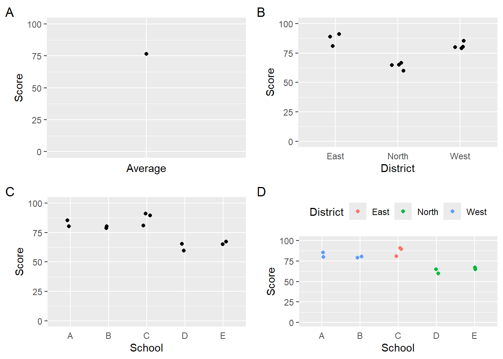
Adding Data Summaries to Plots
But, let’s consider you don’t want to use color for your plot because the printing fees costs too much. Or perhaps, you are giving a talk to an audience of people who have achromatopsia. Whatever the reason, you need shapes. There are different ways to map shapes to variables. One way is with aes(shape = variable). Just like with mapping col or fill to variables results in a palette assignment, a set of shapes are used by default as well. If you don’t like those shapes, you can pass a name vector to scale_shape_manual(values = my_name_vector). Shapes, however, can also be mapped by variables as their identity. We have discussed identity values before. For shape, you need to find the shape values to assign a variable and then add a scale_shape_identity() layer.
For this example, we will add two new variables to the data frame and then map each to the full data and the group data, respectively.
First, let’s look at different shapes.
ggpubr::show_point_shapes()Scale for y is already present.
Adding another scale for y, which will replace the existing scale.
A Single Data Frame using mutate()
Let’s say that we want a plot that contains all of the data points jittered as well as the group means jittered so they don’t overlap. If we want one data frame to handle it, we will need to mutate() the group means following group_by(Event, School). In the event that there happen to be exact or very similar means for the Schools, we will want to jitter the group means using position = position_jitter(height = 0, width = .1).
Let’s see what happens. But to lead into another step, we will just assign a new data frame to SWIM_NEW.
SWIM_NEW <-
SWIM |>
filter(Time < 500) |>
mutate(
School = ifelse(stringr::str_detect(School, "Clare"), "CMS", "PP"),
Shape = ifelse(stringr::str_detect(School, "CMS"), 1, 2),
Shape2 = ifelse(stringr::str_detect(School, "CMS"), 21, 24),
) |>
# group both (creates nxm subsets)
group_by(Event, School) |>
mutate(Mean = mean(Time)) |>
ungroup() Then pass to ggplot():
full_identity_plot <-
SWIM_NEW |>
ggplot(mapping = aes(x = Event)
) +
# plot all data (y = Time)
geom_point(mapping = aes(y = Time,
shape = Shape
),
stroke = 1.2, # make a little thinker
alpha = .4, # a little transparent
position = position_jitter(seed = 167,
height = 0,
width = .2)
) +
# Add a layer using the grouped data (y = Mean)
geom_point(mapping = aes(y = Mean,
shape = Shape2 # filled
),
fill = "grey50", # fill color
size = 3, # larger size
alpha = 1, # opaque
position = position_jitter(seed = 167, height = 0, width = .1)
) +
coord_flip() +
scale_shape_identity() + # use the actual values in the mapped variable
labs(caption = "Caption illustration:\nCMS (cicle), PP (triangle); Mean (filled)")
full_identity_plot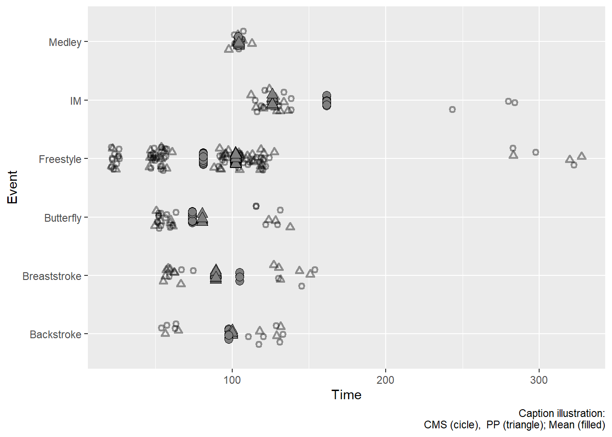
The Jitter problem with full data frame
Jittering takes place at the row level. Because the full data frame is used, each row plotted gets jitter. This means that the group mean that is on each row (redundant per group) is plotted. In such cases, you might be better off using one data frame for the full plot and a summarized data frame for the other plot. You can define the data frame in ggplot() or in the specific geom_point(). In this example, we will define it in ggplot() along with aesthetics. This will be inherited by default for the first geom_point() and then we can specify for the second geom_point().
Because there are different data frames, Time can be used in both data sets. There is no need to have two different variables as there is for the full data set.
SWIMMEAN <-
SWIM_NEW |>
# group both (creates nxm subsets)
group_by(Event, School) |>
summarize(Time = mean(Time)) |>
ungroup() |>
# and we need to add a shape too
mutate(Shape = ifelse(stringr::str_detect(
string = tolower(School), pattern = "cms"),
21, 24)) # filled`summarise()` has grouped output by 'Event'. You can override using the
`.groups` argument.Notice that this data frame contains only four variables: Event, School, Time, and Shape. All aesthetics for a plot using that data set will be constrained to those variables. Because both data frames contain them, we can just add the aesthetics to the plot object rather than the geom.
subset_identity_plot <-
SWIM_NEW |>
ggplot(mapping = aes(x = Event,
y = Time,
shape = Shape
)
) +
# plot all data (y = Time) from SWIM
geom_point(position = position_jitter(seed = 167,
height = 0,
width = .2),
alpha = .8,
size = 2
) +
# Add a layer using the grouped data (y = Time) from SWIMMEAN
geom_point(data = SWIMMEAN,
size = 3,
fill = "grey60",
stroke = 1,
alpha = 1,
position = position_jitter(seed = 167, height = 0, width = .3)
) +
coord_flip() +
scale_shape_identity() +
labs(caption = "Caption illustration:\nCMS (cicle), PP (triangle); Mean (filled)")
subset_identity_plot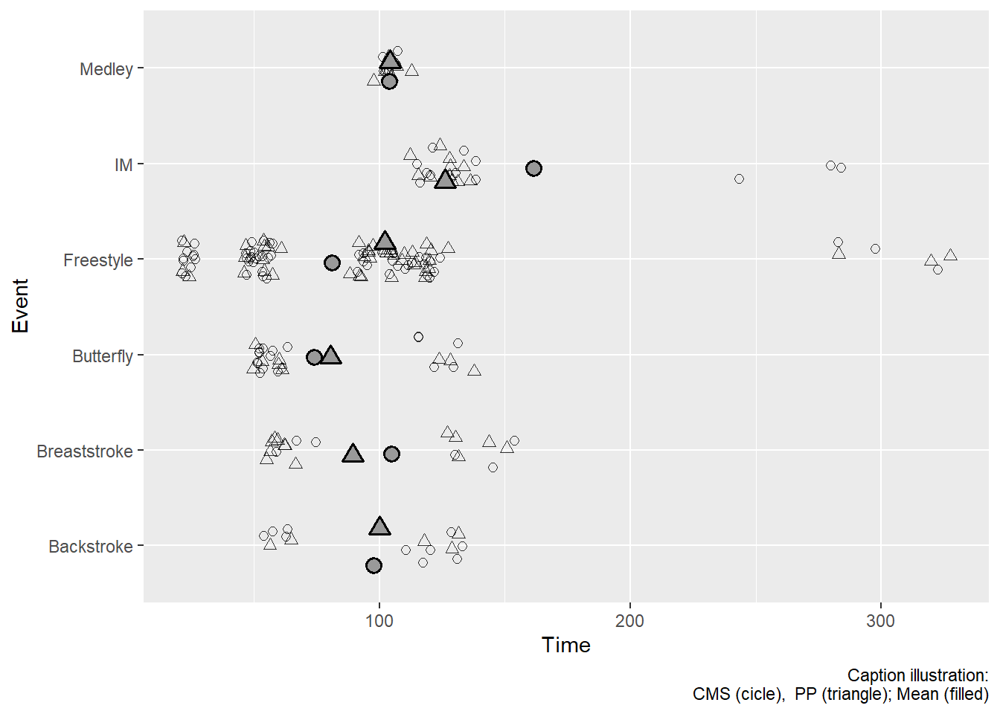
Both plots together:
plot(gridExtra::arrangeGrob(full_identity_plot, subset_identity_plot, ncol = 1))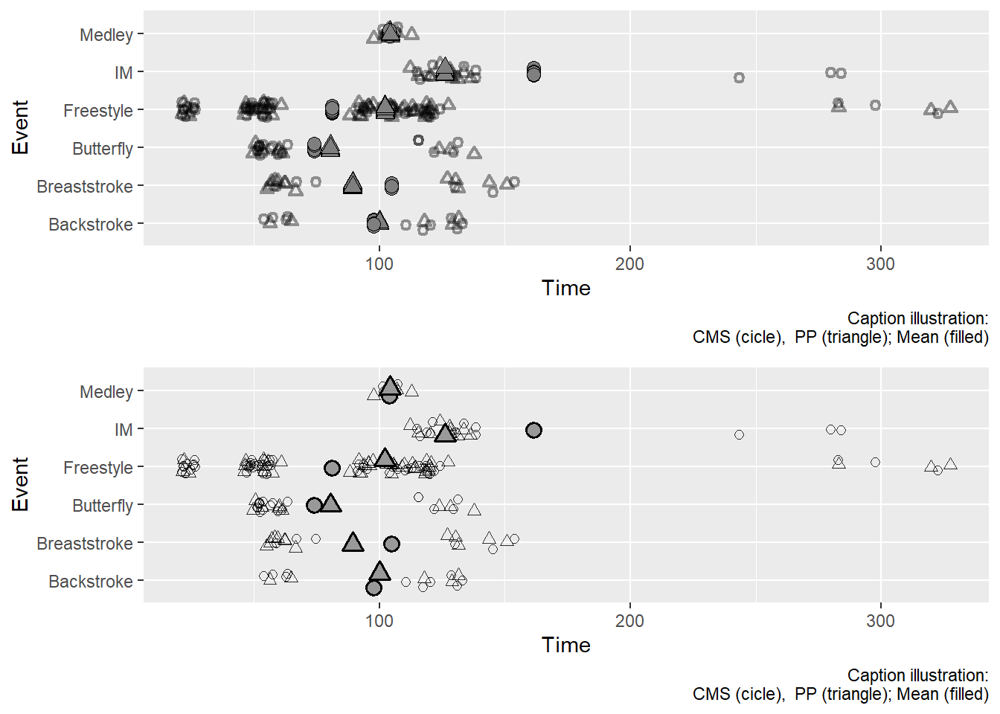
What you see in the second plot is what you might expect. Remember, that if you want to pass a grouping variable summary as an additional layer of a plot, you might be better off creating a separate data frame and pass it separately.
Examples of Color Versions
color_plot1 <-
SWIM_NEW |>
# group both (creates nxm subsets)
group_by(Event, School) |>
mutate(MeanTime = mean(Time)) |>
ungroup() |>
ggplot(mapping = aes(x = Event,
y = Time,
col = School,
fill = School
)
) +
# plot all data (y = Time)
geom_point(position = position_jitter(seed = 167,
height = 0,
width = .2),
pch = 1,
alpha = .7,
stroke = 1,
size = 2
) +
# Add a layer using the grouped data (y = MeanTime)
geom_point(aes(y = MeanTime),
size = 2,
alpha = .4
) +
coord_flip() +
labs(caption = "Caption illustration:\nMeans are closed circles")
color_plot2 <-
SWIM_NEW |>
# group both (creates nxm subsets)
group_by(Event, School) |>
mutate(MeanTime = mean(Time)) |>
ungroup() |>
ggplot(mapping = aes(x = Event,
y = Time,
col = School,
fill = School
)
) +
# plot all data (y = Time)
geom_point(position = position_jitter(seed = 167,
height = 0,
width = .2),
alpha = .7,
size = 2
) +
# Add a layer using the grouped data (y = MeanTime)
geom_point(aes(y = MeanTime),
pch = 1,
size = 2,
stroke = 1,
alpha = .4
) +
coord_flip() +
labs(caption = "Caption illustration:\nMeans are open circles")
plot(gridExtra::arrangeGrob(color_plot1, color_plot2, ncol = 1))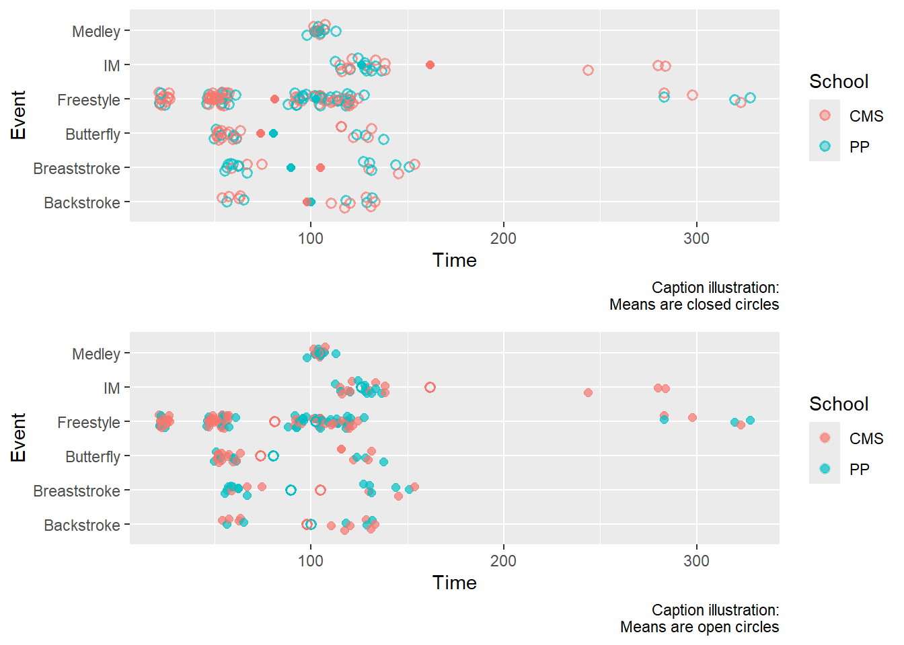
A note on the size aesthetic
For geom_point(), you should understand what is happening when you pass an argument (e.g., size = 2) to the parameter because of its implications for bias in data visualizations. The size parameter scales on both the x and y dimensions proportionately which means that for any circle that doubles the size of the point, its radius will also double. When the radius doubles, however, the diameter and circumference also double. You might guess where this discussion is going.
If size is a constant, this likely will not be a problem. If, however, size is mapped to a variable, then then you have a perceptual challenge related to difficulty with comparing area. See Cleveland & McGill (1984). Moreover, because the area of a circle is proportional to the square of its radius, doubling the point size increases area fourfold.
Here is an example.
ggplot(data =
data.frame(x = 0,
y = 0,
panel = c("`size = 13`", "`size = 26`"),
size = c(13, 26)),
mapping = aes(x, y, size = size)
) +
geom_point() +
scale_x_continuous(limits = c(-5, 5),
breaks = seq(-5, 5, 1)) +
scale_y_continuous(limits = c(-5, 5),
breaks = seq(-5, 5, 1)) +
scale_size_identity() +
facet_wrap(. ~ panel) +
labs(x = NULL, y = NULL)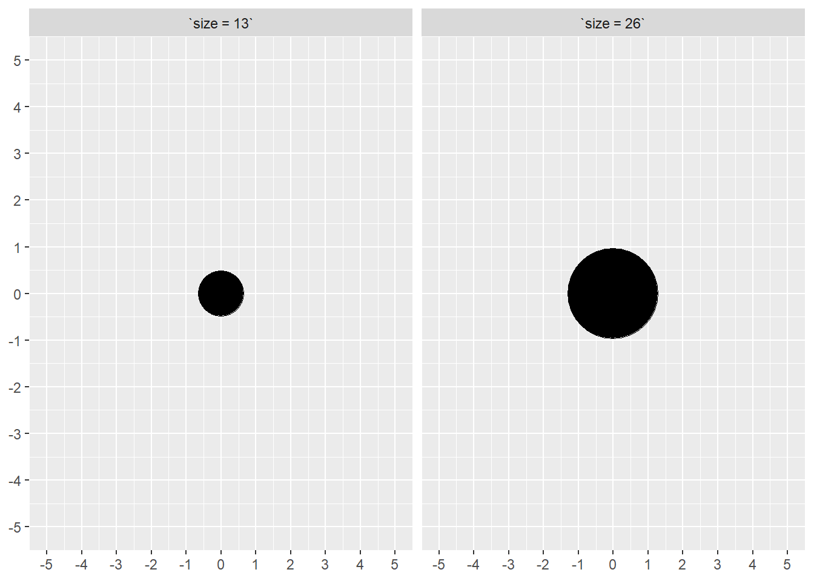
Summary
How data are aggregated will affect both summary statistics and data visualizations. With each level of aggregation, fine-grained or case-level data are lost and not available for plotting. That fine-grained detail may be computed with measures like variability and confidence levels but those measures are summaries themselves. Including them is not the same as including all data. That said, including all data may influence visual attention and interpretation of plots to the extent that outlying points or grouping characteristics (point proximity) drive attention to physical locations of plots at the cost of attending to other locations.
A main workhorse of adding variables and creating aggregated data in the R language is the {dplyr} library. You must, however, be sensitive to the way its functions work so that the variables you create in either a full or summarized data frame represent your intentions and goals.
We have seen that a lot of customization can be applied to our visualizations of data and have shown just a little bit of what can be done. Many more functions and parameters can be used to customize to greater extents.
Session Info
R version 4.4.1 (2024-06-14 ucrt)
Platform: x86_64-w64-mingw32/x64
Running under: Windows 11 x64 (build 22631)
Matrix products: default
locale:
[1] LC_COLLATE=English_United States.utf8
[2] LC_CTYPE=English_United States.utf8
[3] LC_MONETARY=English_United States.utf8
[4] LC_NUMERIC=C
[5] LC_TIME=English_United States.utf8
time zone: America/Los_Angeles
tzcode source: internal
attached base packages:
[1] stats graphics grDevices utils datasets methods base
other attached packages:
[1] htmltools_0.5.8.1 DT_0.33 vroom_1.6.5 lubridate_1.9.3
[5] forcats_1.0.0 stringr_1.5.1 dplyr_1.1.4 purrr_1.0.2
[9] readr_2.1.5 tidyr_1.3.1 tibble_3.2.1 ggplot2_3.5.1
[13] tidyverse_2.0.0
loaded via a namespace (and not attached):
[1] gtable_0.3.5 xfun_0.45 htmlwidgets_1.6.4 rstatix_0.7.2
[5] tzdb_0.4.0 vctrs_0.6.5 tools_4.4.1 generics_0.1.3
[9] fansi_1.0.6 cluster_2.1.6 pkgconfig_2.0.3 R.oo_1.26.0
[13] data.table_1.15.4 checkmate_2.3.1 lifecycle_1.0.4 compiler_4.4.1
[17] farver_2.1.2 munsell_0.5.1 carData_3.0-5 yaml_2.3.10
[21] htmlTable_2.4.2 Formula_1.2-5 car_3.1-2 pillar_1.9.0
[25] ggpubr_0.6.0 crayon_1.5.3 R.utils_2.12.3 Hmisc_5.1-3
[29] abind_1.4-5 rpart_4.1.23 tidyselect_1.2.1 digest_0.6.36
[33] stringi_1.8.4 labeling_0.4.3 rprojroot_2.0.4 fastmap_1.2.0
[37] grid_4.4.1 here_1.0.1 colorspace_2.1-0 cli_3.6.3
[41] magrittr_2.0.3 base64enc_0.1-3 utf8_1.2.4 broom_1.0.6
[45] foreign_0.8-87 withr_3.0.1 scales_1.3.0 backports_1.5.0
[49] bit64_4.0.5 timechange_0.3.0 rmarkdown_2.27 bit_4.0.5
[53] nnet_7.3-19 gridExtra_2.3 ggsignif_0.6.4 R.methodsS3_1.8.2
[57] hms_1.1.3 evaluate_0.24.0 knitr_1.47 rlang_1.1.4
[61] glue_1.7.0 rstudioapi_0.16.0 jsonlite_1.8.8 R6_2.5.1